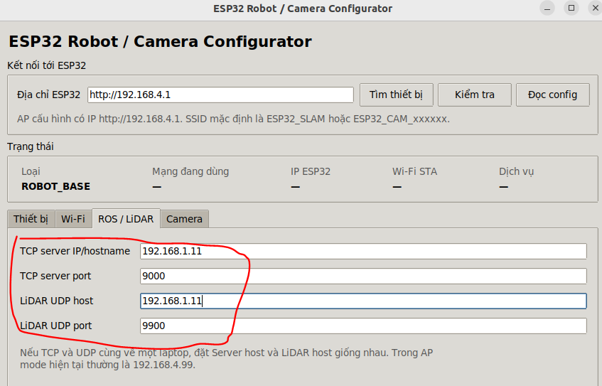

Sử dụng Wi-Fi ngoài
Mặc định robot phát mạng ESP32_SLAM (một số firmware hiện ESP SLAM). Trang này chỉ dành cho trường hợp bạn muốn robot tham gia mạng Wi-Fi 2,4 GHz của phòng học hoặc phòng lab. Nếu tiếp tục dùng mạng robot mặc định, kết nối theo hướng dẫn này và bỏ qua toàn bộ thao tác bên dưới.
Điều kiện: máy tính chạy ROS 2 và ESP32 robot phải ở cùng mạng. Trên Windows, máy ảo Ubuntu vẫn cần giao tiếp với robot qua card mạng được bridge. ESP32-CAM là thiết bị tùy chọn; nếu robot không có camera, bỏ qua phần camera.
1. Ghi IP của máy tính trên Wi-Fi mới
Kết nối máy tính với Wi-Fi muốn sử dụng rồi mở Terminal Ubuntu:
hostname -I
Ghi IP tương ứng với mạng Wi-Fi mới. Ví dụ trong trang này: SSID ROBOT_WIFI, IP máy tính 192.168.1.11. Đây chỉ là ví dụ; nhập IP thực tế của bạn. Trên Windows, kiểm tra IP mà Ubuntu máy ảo dùng để chạy ROS 2.
2. Mở công cụ cấu hình của robot
- Chuyển máy tính sang Wi-Fi do robot phát, mật khẩu
12345678. - Đặt
esp32_robot_configurator.pydo ROBOVIS cung cấp vào Home của Ubuntu, rồi chạy:
python3 ~/esp32_robot_configurator.py
- Nếu báo thiếu Tkinter, khi còn kết nối Internet cài
python3-tk, rồi mở lại chương trình. - Chọn Tìm thiết bị, chọn loại
ROBOT_BASE, sau đó chọn Chọn và đọc config. Nếu không tìm thấy, nhậphttp://192.168.4.1vào ô địa chỉ ESP32 và thử Đọc config.
3. Nhập mạng và nơi nhận dữ liệu
Trong tab Wi-Fi, chọn chế độ AUTO, nhập SSID và mật khẩu của mạng mới. Trong tab ROS / LiDAR, nhập IP máy tính đã ghi ở bước 1:
| Trường trong công cụ | Giá trị ví dụ |
|---|---|
| TCP server IP/hostname | 192.168.1.11 |
| TCP server port | 9000 |
| LiDAR UDP host | 192.168.1.11 |
| LiDAR UDP port | 9900 |

Nếu hai dịch vụ chạy trên cùng một PC, hai ô địa chỉ phải trỏ đến cùng IP của PC đó. Giữ nguyên cổng 9000 và 9900 theo cấu hình được bàn giao. Chọn Lưu config và khởi động lại, xác nhận và chờ khoảng 15 giây. Mạng riêng của robot có thể biến mất trong lúc chuyển sang Wi-Fi mới.
4. Kiểm tra robot đã vào mạng mới
Kết nối lại máy tính với Wi-Fi mới; trong công cụ cấu hình chọn Tìm thiết bị. Khi thấy ROBOT_BASE, chọn thiết bị và đọc cấu hình. Sau đó chạy bringup và kiểm tra /scan, /odom như hướng dẫn khởi động. Nếu công cụ không tìm thấy robot, kiểm tra SSID, mật khẩu và xem robot có trở về mạng ESP32_SLAM hay không.
Nếu phiên bản có ESP32-CAM
Camera là phần tùy chọn. Nếu có, hãy cấp nguồn và kết nối máy tính tới mạng cấu hình ESP32_CAM_... của camera (mật khẩu mặc định 12345678), mở công cụ rồi chọn loại CAMERA. Trong tab Wi-Fi, nhập cùng SSID với robot. Trong tab Camera, thay IP_MAY_TINH bằng IP ở bước 1 tại HTTP upload URL:
http://IP_MAY_TINH:5000/upload
Lưu và khởi động lại; kết nối máy tính trở về Wi-Fi mới, tìm lại ROBOT_BASE và CAMERA. Nếu camera đã ở một Wi-Fi khác và không phát mạng cấu hình, kết nối máy tính vào mạng đó để tìm camera theo công cụ bàn giao.
Khi IP máy tính thay đổi
Robot có thể kết nối Wi-Fi thành công nhưng không gửi được dữ liệu về ROS 2 nếu IP máy tính thay đổi. Cách ổn định là cấu hình bộ phát Wi-Fi luôn cấp cùng IP cho máy tính. Nếu dùng IP động, chạy lại hostname -I, cập nhật cả hai ô IP trong tab ROS / LiDAR; với phiên bản có camera, cập nhật IP trong URL :5000/upload của camera. Giữ nguyên các cổng đã bàn giao.
Nếu chỉ đổi IP, công cụ cấu hình không hiển thị lại mật khẩu Wi-Fi đã lưu; theo hướng dẫn bàn giao, để trống ô mật khẩu khi bạn muốn giữ mật khẩu cũ.